What do four bits
do to a real model?
A distribution, a layer, and the prediction they change.
Locate the intervention before looking at a histogram
Pinned model architecture

Two residual additions in one decoder block
Qwen2 block · step with →Each of S token positions carries 896 values. Preserve X for the first identity bypass.
This starts a branch. The saved X remains unchanged.
A is the per-head attention output. The branch mixes allowed positions, then projects their features.
Both inputs have shape [1,S,896]. The upper skip edge carries X unchanged.
The second branch and its bypass both start after the first addition.
\(M=\operatorname{down}(\operatorname{SiLU}(g)\odot u)\). Elementwise product; each position uses widths 896, 4864, 896.
The lower skip edge carries \(X_1\). \(X_2\) enters the next separately parameterized block.
The measured matrix is inside a gated MLP
Pinned Qwen MLP architecture

Know which dimension you quantize
One down projection · no biasOne scale maps a distribution onto a few levels
Measured Qwen · CPU FP32 / simulated INT4

An extreme weight sets the step for everyone
Actual measured rangeMany local scales preserve more of the distribution
Measured Qwen · CPU FP32 / simulated INT4

Local scales trade metadata for smaller output error
Measured Qwen · CPU FP32 / simulated INT4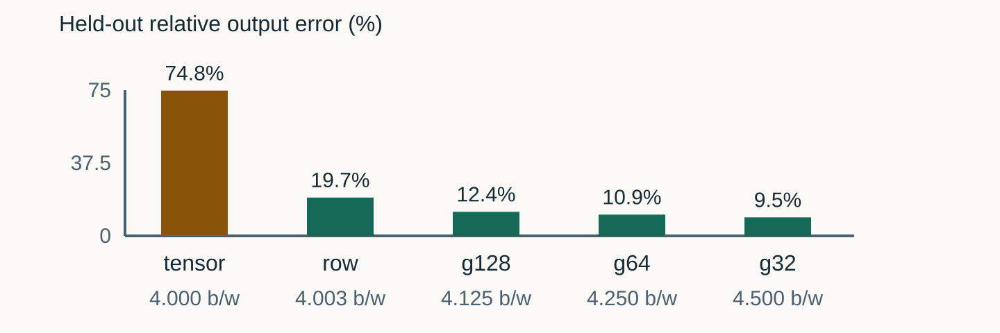
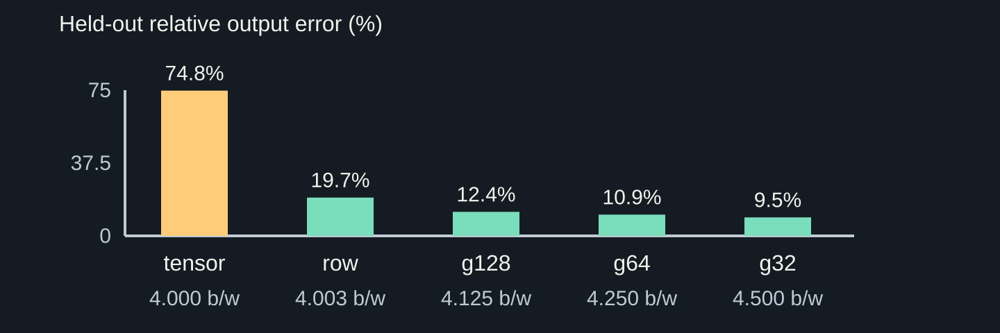
Calibration and held-out inputs are separate
Six fixed public teaching prompts| Task | Calibration | Held-out check |
|---|---|---|
| Sequence | Continue with one number: 2, 4, 6, | Continue with one number: 3, 6, 9, |
| Capital | The capital of France is | The capital of Japan is |
| Sentiment | Classify positive or negative: I loved this film. | Classify positive or negative: This was a terrible film. |
| Full chat positions | 120 total tokens | 121 total tokens |
Actual inputs are not equally active across channels
Measured Qwen · CPU FP32 / simulated INT4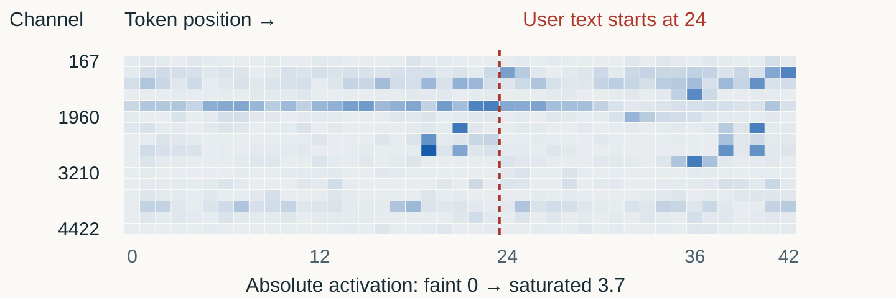
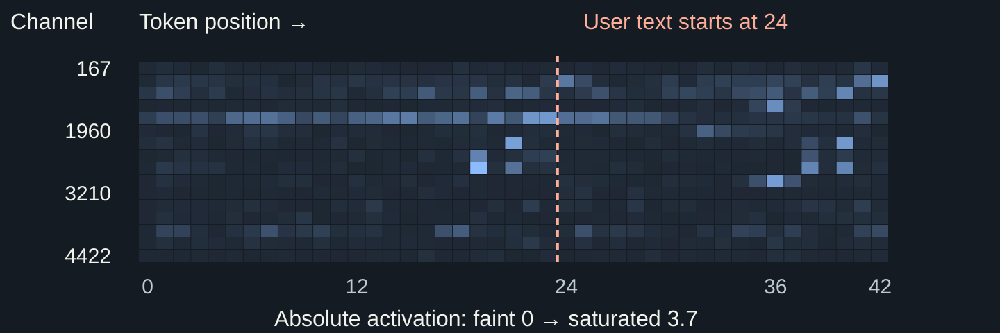
The input determines how weight error propagates
Same inputs · matching output coordinatesMeasure the output, not just the histogram
Measured Qwen · CPU FP32 / simulated INT4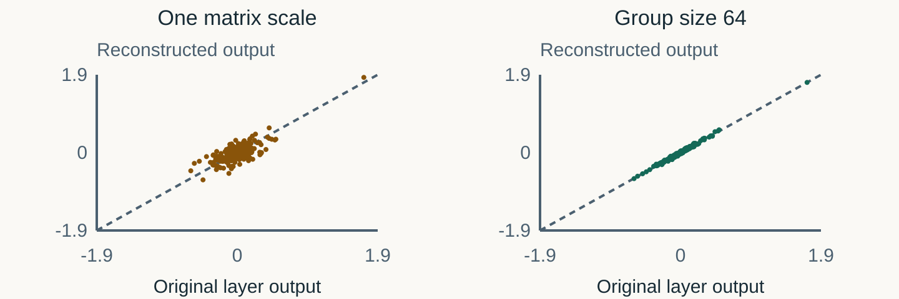
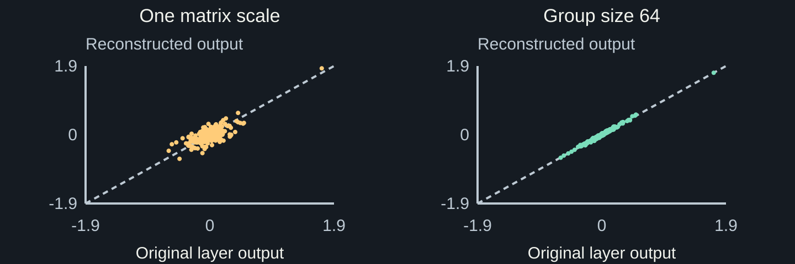
The weight-only optimum is not the output optimum
Measured Qwen · CPU FP32 / simulated INT4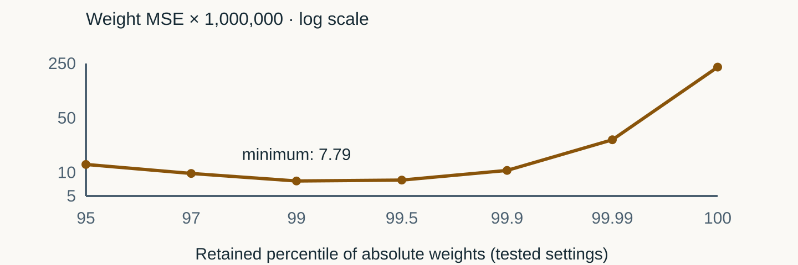
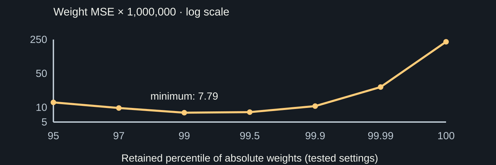
Choose a range on calibration inputs, then check transfer
Measured Qwen · CPU FP32 / simulated INT4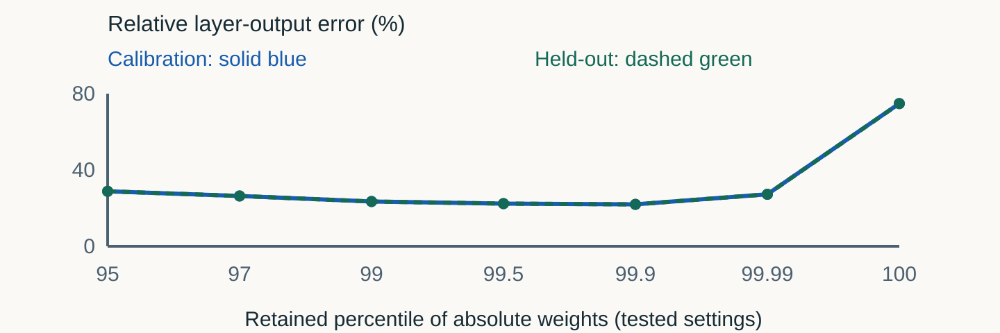
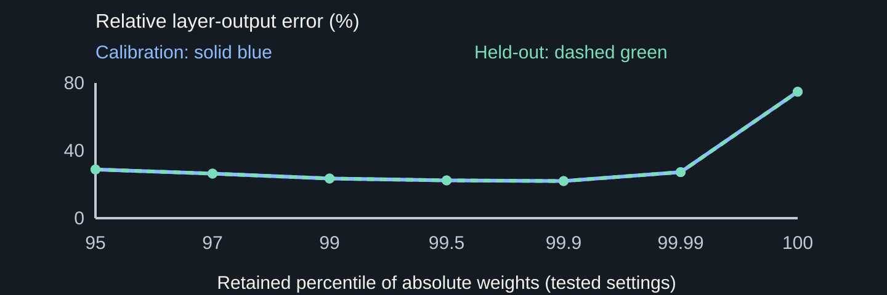
Which loss should choose our range?
Prediction before the model interventionCalibration output error chooses 99.9.
Explain why both results can be correct. Then predict: does the lower layer error guarantee the same next token?
The same context can produce different probabilities
Measured Qwen · CPU FP32 / simulated INT4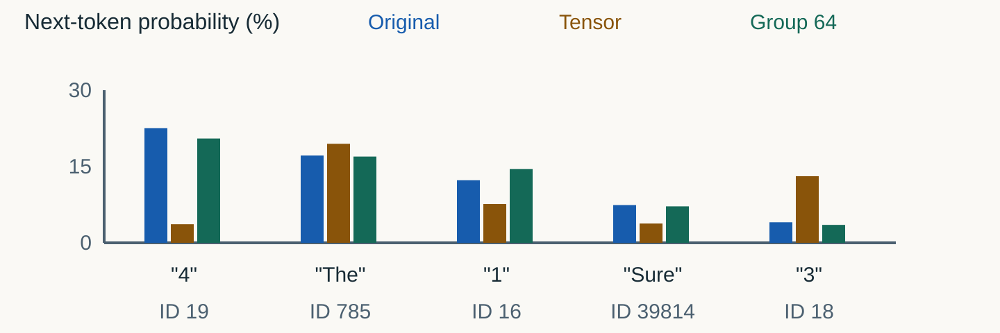
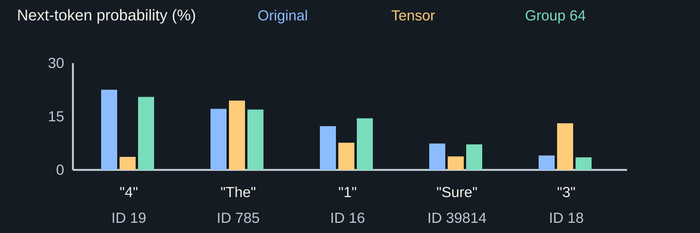
Preserving behavior is not proving correctness
Same held-out arithmetic context| Setting | Most likely next token | Distribution shift: KL |
|---|---|---|
| Original FP32 | “4” | 0 nats |
| One matrix scale | “The” | 0.4403 nats |
| Group 64 | “4” | 0.0057 nats |
The next mechanisms answer different questions
Continuation · not yet the GPU experiment| Question | Mechanism to investigate next |
|---|---|
| Which reconstruction values exist? | Uniform grid versus NF4 codebook |
| How should activations affect weights? | AWQ: rescale important input channels |
| Can remaining weights offset an error? | GPTQ: compensate using input correlations |
| Does this representation run well? | Packed weights, dequantization and GPU kernels |
Reproduce the plots and inspect the sources
Measured data · borrowed teaching ideas- Measurement record — exact inputs, checkpoint hashes, versions and full plot data.
- Pinned Qwen config and implementation — dimensions, residual paths and MLP.
- MIT 6.5940, lectures 5 and 13 — distributions before mechanisms; activation-aware quantization.
- PyTorch quantization guide — range selection and granularity as testable choices.
- SmoothQuant — token/channel activation views. Our plots use Qwen measurements, not its OPT results.